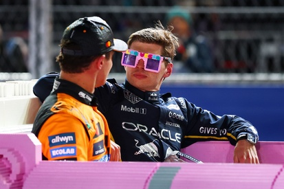
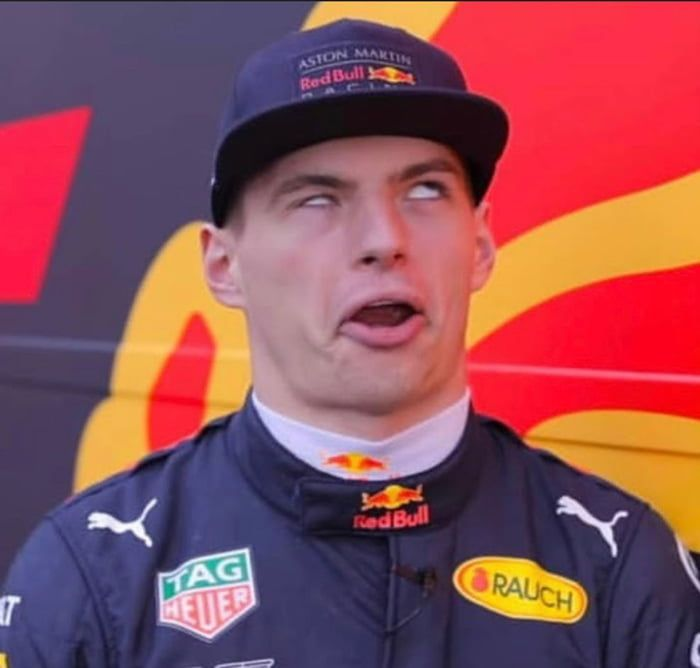
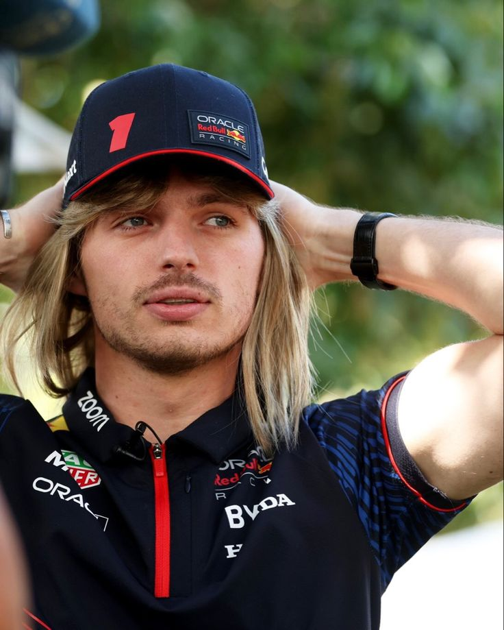
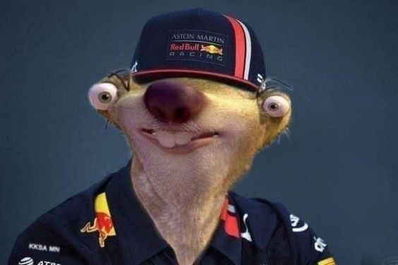

Visualizing Max Verstappen's 2023 Formula 1 Season
Fans remember the 2023 season as Verstappen's most dominant. This project turns that memory into measurement: how dominance built race by race, how much was driver vs. car, where it sits in F1 history, and how it compares to peak performances in other sports.
One season that bent Formula 1's record book.
01 / 04Within-Season Dominance

This bar chart race shows how the 2023 standings evolved race by race. Use the play/pause button to control the animation, drag the slider to jump to any round, and hover any bar to focus a single driver. Watch how Verstappen's red bar pulls away from the field around mid-season.
02 / 04Driver vs. Car

Verstappen and Sergio Pérez drove the same Red Bull RB19 all season. If the car alone explained 2023, the two columns below should look the same. They don't. The first row shows season-wide totals; the second and third rows trace each driver's metric race by race.
Note: a race win is worth 25 points. Some races show values above 25 because drivers can earn additional points through sprint results and one extra point for fastest lap if they finish in the top 10.
03 / 04F1 History

Ascari 1952, Clark 1963, Senna 1988, Schumacher 2004, Vettel 2013, Hamilton 2020 — each remembered as historically dominant. Every axis below is normalized to a percentage so eras with different scoring systems and season lengths are directly comparable. A line that hugs the top of every axis is the most dominant. Hover any line to isolate it. The legend mirrors the hover state so the highlighted season is easier to identify.
Win Rate, Podium Rate, Pole Rate and Fastest Lap Rate are computed as counts ÷ races. Points Capture is average points-per-race ÷ the maximum points possible per race in that era. Reliability is 1 − (DNFs ÷ races).
04 / 04Cross-Sport Greats

Directly comparing an F1 race finish to a tennis tournament result is misleading. Instead, each event is converted into a sport-relative dominance percentile from 0 to 1, where 1 means the best performer in that field. The curve then asks: how often did this athlete perform near the top of their own sport?
Dominance percentile is computed as 1 − ((finish rank − 1) ÷ (field size − 1)). Field sizes are sport-specific approximations: 20-car F1 field, 128-player tennis draw, 22-player soccer match, 11-player cricket batting side and 8-lane Olympic final. Soccer and cricket match-impact ranks are approximated from each athlete's scoring, role and award-dominance season. The gray band is a typical elite benchmark, not an average athlete.
What the data says
Four findings that fall out of the numbers once you stop relying on headline totals and look at rates, distributions, and per-event percentiles.
The standings stayed close through the opening rounds. Verstappen's separation comes from a sustained run of wins from Spain onward — including the all-time consecutive-wins record between rounds 12 and 14.
Pérez drove the same car to 285 points and 2 wins. Verstappen reached 575 and 19. Across every metric in the small multiples, the gap grows steadily across the season rather than coming from a handful of outlier races.
On normalized rates, Ascari 1952 still hits 100% on win rate, podium rate and reliability — he won every race he started. Senna 1988's 81% pole rate beats Verstappen's 55%. 2023 sits among the most dominant ever, but not unambiguously the most dominant.
Once events are converted to sport-relative percentiles, Verstappen sits near the top alongside peak Federer, peak Phelps, peak Messi and peak Kohli — not because the sports are equivalent, but because each athlete sustained near-best-in-field performance for a season.
Formula 1 glossary
A few F1 terms appear throughout the project. These definitions keep the charts readable for viewers who do not follow every race weekend.
| Finish | Points |
|---|---|
| 1st | 25 |
| 2nd | 18 |
| 3rd | 15 |
| 4th | 12 |
| 5th | 10 |
| 6th | 8 |
| 7th | 6 |
| 8th | 4 |
| 9th | 2 |
| 10th | 1 |
In 2023, a driver could also earn 1 extra point for fastest lap if they finished inside the top 10. That bonus point was removed from Formula 1 starting with the 2025 season.
Sprint races in 2023 awarded points to the top eight finishers: 8, 7, 6, 5, 4, 3, 2 and 1. The six sprint weekends were Azerbaijan, Austria, Belgium, Qatar, United States and São Paulo.
Data & Methodology
This project compares dominance in two ways: first inside Formula 1, where the data is race-by-race and season-based, and then across sports, where raw totals have to be translated into a common scale before they can be interpreted responsibly.
The 2023 Formula 1 base data comes from the publicly available
JDAustralia 2023 F1 Season dataset on Kaggle. The project uses
F1_2023_Regular.csv as the source for race-by-race
finishing position, points score, pole position and fastest lap data.
Cleaned and derived local CSVs then drive the bar chart race,
Verstappen-Pérez teammate comparison and small multiples.
The historical Formula 1 seasons in the parallel-coordinates chart,
from Ascari 1952 through Hamilton 2020, were not part of that Kaggle
file. Their per-season totals were pulled manually from public
Formula 1 references and compiled into dominant_seasons.csv.
The cross-sport ECDF needed per-event positions outside Formula 1, so
tennis tournament results, Olympic finals and approximated
match-impact rankings for soccer and cricket were assembled from
public records and stored in ecdf_dominance.csv.
A large language model was used sparingly during data preparation, primarily to reformat CSV rows, normalize driver and team name spellings across sources, and flag inconsistencies for manual review. Every numeric value used by the visualizations was reviewed against its source before being committed.
The project compares drivers and seasons using rates instead of raw totals so shorter seasons and older scoring systems remain comparable.
Each event is converted into a sport-relative percentile from 0 to 1, where 1 means best performer in that competitive field.
The goal is not to declare a single greatest season, but to compare how sustained separation from peers shows up in different sports.
Comparing 2023 to 1952 directly is misleading. The 1952 season had eight championship rounds with a maximum of nine points per race, while 2023 had 22 rounds with a maximum of 26. A raw 575 points in 2023 and 53.5 points in 1952 are not the same currency, so every axis in the parallel-coordinates chart is converted to a rate bounded between 0 and 1.
Win Rate is wins divided by races. Podium Rate, Pole Rate and Fastest Lap Rate follow the same structure. Reliability is 1 − (DNFs ÷ races). Points Capture does the most work: it divides average points per race by the maximum points available per race in that scoring era. The ceiling differs by era — 9 in 1952, 1963 and 1988; 10 in 2004; and 26 in 2013, 2020 and 2023 — so this turns each season into the same question: what fraction of available points did it capture?
Comparing across sports creates a different problem because the unit of an event changes. Winning a 20-car F1 race is not the same object as reaching a round in a 128-player tennis draw or appearing in an Olympic final. The ECDF therefore uses a sport-relative dominance percentile: 1 − ((rank − 1) ÷ (field size − 1)). A percentile of 1.0 means the athlete was the best performer in that event's field. A percentile of 0.5 means they finished around the middle of that field.
Once every event has a percentile, the ECDF asks: for this athlete in this season, what share of events met or exceeded each dominance threshold? An earlier version used raw finishing rank, which worked inside Formula 1 but broke at the cross-sport boundary. Switching to percentile-of-field is what gives every athlete's curve a defensible shared x-axis.
data/F1_2023_Regular.csv as the 2023 F1 base dataset.data/bar_chart_race_2023.csv for race-by-race F1 standings.data/verstappen_perez_2023_full.csv for teammate metrics.data/dominant_seasons.csv for historical F1 seasons.data/ecdf_dominance.csv for cross-sport percentile curves.